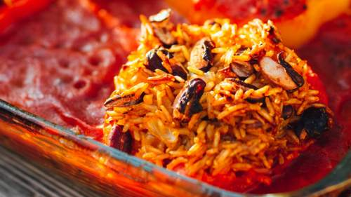

<!DOCTYPE html>
<html lang="de">
  <head>
    <meta charset="utf-8">
    <meta name="viewport" content="width=device-width, initial-scale=1.0">
    <title>View Transition 3 - individuelle Animationen durch einen Teaser</title>
    
      <link rel="stylesheet" href="./assets/css/layouts/testlayout.css">
      <link rel="stylesheet" href="./assets/css/basics/code.css">
      <link rel="stylesheet" href="./assets/css/components/components-base.css">
      <link rel="stylesheet" href="./assets/css/components/card.css">
      <link rel="stylesheet" href="./assets/css/view-transitions/vt-3.css">
    
    
  </head>
  <body>
    
  </body>
</html>

<div class="wrapper">
  <header class="site-header">
    <div class="logo">Logo</div>
    <button class="site-nav-toggle" aria-label="Open Navigation" aria-expanded="false">
      &#9776;
    </button>
    <nav class="site-nav">
      <a href="vt-3.html" class="active">Startseite</a>
      <a href="vt-3a.html">Gegrillte Paprika</a>
      <a href="vt-3b.html">Bolognese</a>
      <a href="vt-3c.html">Gefüllte Paprika</a>
    </nav>
  </header>
  <main class="content">
    <h1>Animation durch einen Teaser v2</h1>
    <p>Die Animation von einem kleinen zu einem großen Element hat kleine Hürden. Wichtig ist, dass jedes zu animierende
      Element eine eindeutige Identität hat, wie eine ID. Diese bekommt sie durch den
      <code>view-transition-name</code>. Dieser Name muss auf der alten wie der neuen Seite identisch sein. Deshalb empfiehlt
        es sich, den Namen zu durchdenken. </p>
    <p>Wir können den Teasern eine Ausgangsanimation geben, den damit verknüpften Elementen auf der Zielseite jeweils eigene. Aber manchmal kann man feststellen, dass weniger mehr ist. Jedenfalls in manchen Kontexten.</p>
    
    
    <div class="card-grid">
      <article class="card">
        
        <p>
          <a href="vt-3a.html" style="view-transition-name: gegrillte-paprika-title;">
          Gegrillte Paprika</a>
        </p>
      </article>
      <article class="card">
        
        <p>
          <a href="vt-3b.html" style="view-transition-name: bolognese-title;">Bolognese</a>
        </p>
      </article>
      <article class="card">
        
        <p>
          <a href="vt-3c.html" style="view-transition-name: gefuellte-paprika-title;">
          Gefüllte Paprika</a>
        </p>
      </article>
    </div>
    
    
  </main>
  <aside class="sidebar">
    <h2>Abseitiges</h2>
    <div class="post-thumbnails">
      <div class="thumbnail"></div>
      <div class="thumbnail"></div>
    </div>
  </aside>
  <footer class="site-footer">Footer</footer>
</div>

  <script src="assets/js/syntaxp.min.js"></script>

</body></html>